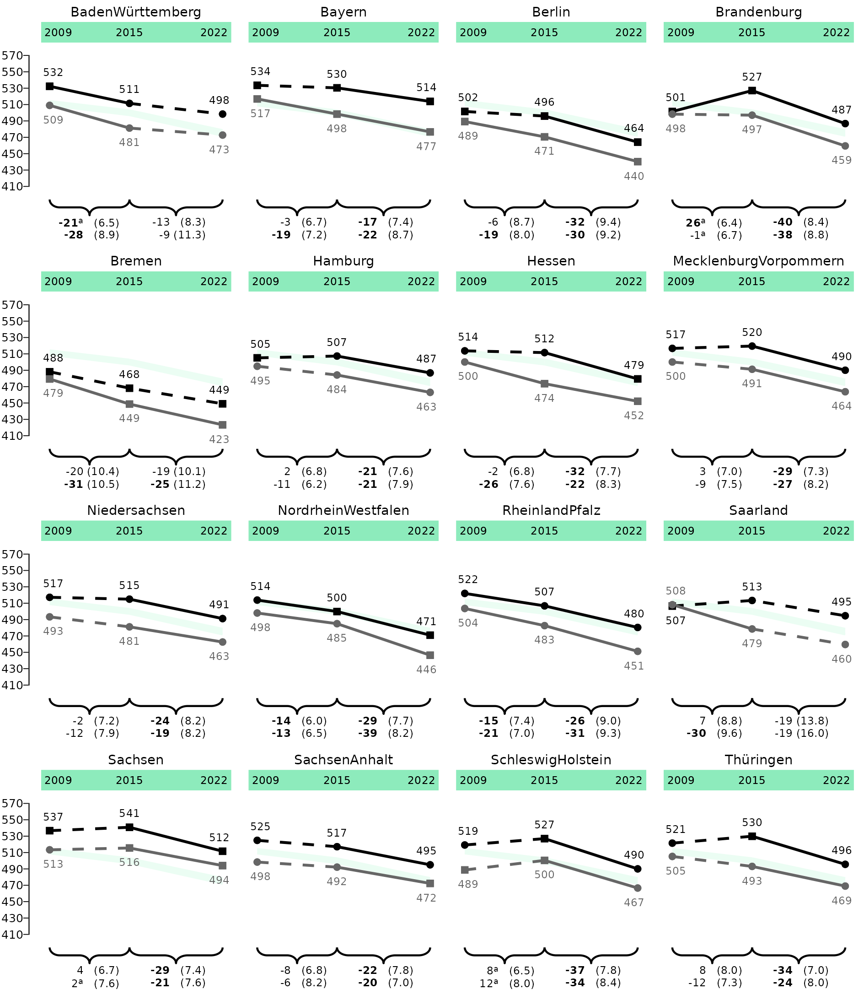
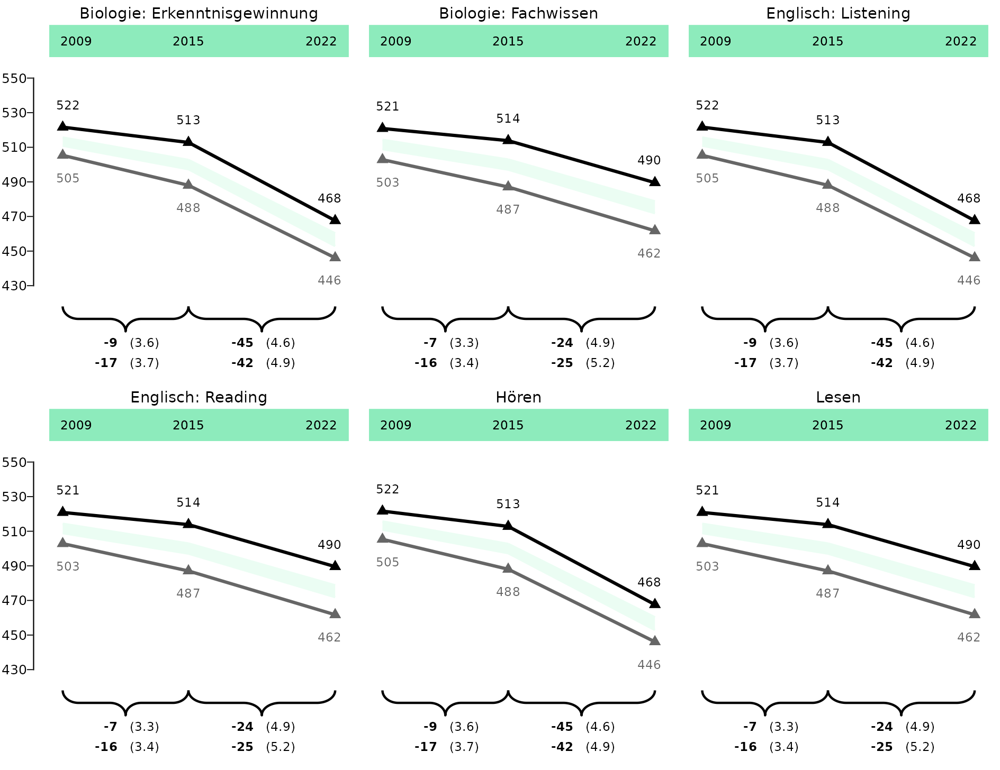
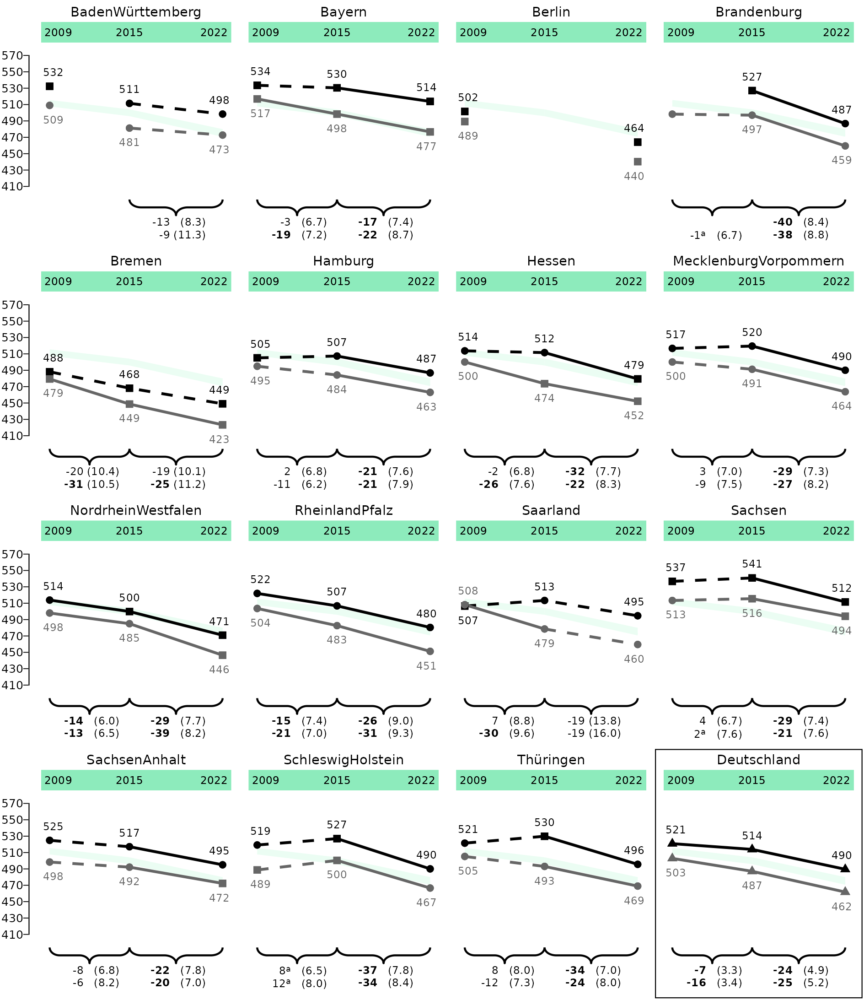

Lineplots
lineplots.RmdThis vignette shows you how to plot lineplots from
eatRep data. The workflow is optimized for
Bildungstrend-graphs, but can be expanded for plotting other
eatRep data as well.
Lineplot for one group
Let’s take example data from the trend_gender example
dataset. The first step in the workflow always is the data preparation.
This is needed to bring the eatRep data into the correct
format for plotting.
dat_lineplot_1 <- prep_lineplot(
trend_gender[[1]],
subgroup_var = "Kgender" ## Leave this argument if you have only one subgroup
)It might be necessary to do some slight manual data preparation:
## Don't do that if you only have one group in your data, or want to plot all groups
dat_lineplot_1 <- subset(dat_lineplot_1, subgroup_var == "total")
## For correctly displaying the state names:
dat_lineplot_1$state_var <- process_bundesland(dat_lineplot_1$state_var)
dat_lineplot_1$subgroup_var <- as.factor(dat_lineplot_1$subgroup_var)And then we can already plot:
lineplot_1 <- plot_lineplot(dat_lineplot_1,
years_lines = list(c(2009, 2015), c(2015, 2022)),
years_braces = list(c(2009, 2015), c(2015, 2022)),
background_facet = "Deutschland",
plot_settings = plotsettings_lineplot(
axis_y_lims = c(420, 540),
point_shapes = c("TRUE" = 17, "FALSE" = 16), ## Here we use the triangles
default_list = lineplot_4x4
)
)
save_plot(lineplot_1, filename = "C:/Users/hafiznij/Downloads/lineplot_1_group.pdf", width = 160, height = 185)
Lineplot for two groups
dat_lineplot_2 <- prep_lineplot(
trend_gender[[1]],
subgroup_var = "Kgender"
)
dat_lineplot_2$state_var <- process_bundesland(dat_lineplot_2$state_var)
## We can set the order of the brace labels by setting the factor levels of the subgroup_var:
dat_lineplot_2$subgroup_var <- factor(dat_lineplot_2$subgroup_var, levels = c("female", "male", "total"), ordered = TRUE)
lineplot_2 <- plot_lineplot(
dat_lineplot_2,
years_lines = list(c(2009, 2015), c(2015, 2022)),
years_braces = list(c(2009, 2015), c(2015, 2022)),
background_facet = "Deutschland",
background_subgroup = "total",
plot_settings = plotsettings_lineplot(
subgroup_colours = c(female = "black", male = cmyk(0, 0, 0, 60)), ## Here we determine the colours of the subgroups
axis_y_lims = c(410, 560),
default_list = lineplot_4x4
)
)
save_plot(lineplot_2, filename = "C:/Users/hafiznij/Downloads/lineplot_2_groups.pdf", width = 160, height = 185)
lineplot_2
Lineplot for whole Germany 3x2
trend_ger <- do.call(rbind, lapply(trend_gender, prep_lineplot, subgroup_var = "Kgender"))
trend_ger <- subset(trend_ger, state_var == "total")
trend_ger$subgroup_var <- factor(trend_ger$subgroup_var, levels = c("female", "male", "total"), ordered = TRUE)
trend_ger$kb <- gsub("hoeren", "Hören", trend_ger$kb)
trend_ger$kb <- gsub("lesen", "Lesen", trend_ger$kb)
trend_ger_2 <- trend_ger
trend_ger_3 <- trend_ger
trend_ger_2$kb <- gsub("Lesen", "Englisch: Reading", trend_ger_2$kb)
trend_ger_2$kb <- gsub("Hören", "Englisch: Listening", trend_ger_2$kb)
trend_ger_3$kb <- gsub("Lesen", "Biologie: Fachwissen", trend_ger_3$kb)
trend_ger_3$kb <- gsub("Hören", "Biologie: Erkenntnisgewinnung", trend_ger_3$kb)
trend_total <- rbind(trend_ger, trend_ger_2, trend_ger_3)Her we have to add other significance columns for
point_sig and brace_label_sig_superscript!
lineplot_germany_1 <- plot_lineplot(
trend_total,
years_lines = list(c(2009, 2015), c(2015, 2022)),
years_braces = list(c(2009, 2015), c(2015, 2022)),
point_sig = "sig_mean_comp_crossDiff_sameFacet_totalSubgroup",
brace_label_sig_superscript = "sig_mean_comp_trend_crossDiff_sameFacet_totalSubgroup",
facet_var = "kb",
background_subgroup = "total",
plot_settings = plotsettings_lineplot(
subgroup_colours = c(female = "black", male = cmyk(0, 0, 0, 60)), ## Here we determine the colours of the subgroups
brace_label_nudge_x = 0.22,
n_cols = 2,
axis_y_lims = c(430, 550),
default_list = lineplot_germany
)
)
save_plot(lineplot_germany_1, filename = "C:/Users/hafiznij/Downloads/lineplot_2_groups_germany_3x2.pdf", height = 185, width = 108)
lineplot_germany_1
Lineplot for whole Germany 2x3
lineplot_germany_2 <- plot_lineplot(
trend_total,
years_lines = list(c(2009, 2015), c(2015, 2022)),
years_braces = list(c(2009, 2015), c(2015, 2022)),
facet_var = "kb",
background_subgroup = "total",
point_sig = "sig_mean_comp_crossDiff_sameFacet_totalSubgroup",
brace_label_sig_superscript = "sig_mean_comp_trend_crossDiff_sameFacet_totalSubgroup",
plot_settings = plotsettings_lineplot(
subgroup_colours = c(female = "black", male = cmyk(0, 0, 0, 60)), ## Here we determine the colours of the subgroups
brace_label_nudge_x = 0.23,
n_cols = 3,
axis_y_lims = c(430, 550),
default_list = lineplot_germany )
)
save_plot(lineplot_germany_2, filename = "C:/Users/hafiznij/Downloads/lineplot_2_groups_germany2x3.pdf", height = 185 * 2 / 3, width = 160)
lineplot_germany_2
Lineplot with missing values
dat_lineplot_2 <- prep_lineplot(
trend_gender[[1]],
subgroup_var = "Kgender"
)
## Einfügen von NAs zur Demonstration
dat_lineplot_2$est_mean_comp_none <- ifelse(dat_lineplot_2$state_var == "Berlin" & dat_lineplot_2$year == 2015, NA, dat_lineplot_2$est_mean_comp_none)
dat_lineplot_2$est_mean_comp_none <- ifelse(dat_lineplot_2$state_var == "Brandenburg" & dat_lineplot_2$year == 2009 & dat_lineplot_2$subgroup_var == "female", NA, dat_lineplot_2$est_mean_comp_none)
dat_lineplot_2$est_mean_comp_trend_sameFacet_sameSubgroup <- ifelse(dat_lineplot_2$state_var == "Brandenburg" & dat_lineplot_2$trend == "2009_2015" & dat_lineplot_2$subgroup_var == "female", NA, dat_lineplot_2$est_mean_comp_trend_sameFacet_sameSubgroup)
dat_lineplot_2$se_mean_comp_trend_sameFacet_sameSubgroup <- ifelse(dat_lineplot_2$state_var == "Brandenburg" & dat_lineplot_2$trend == "2009_2015" & dat_lineplot_2$subgroup_var == "female", NA, dat_lineplot_2$se_mean_comp_trend_sameFacet_sameSubgroup)
dat_lineplot_2 <- dat_lineplot_2[dat_lineplot_2$state_var != "Niedersachsen", ]
dat_lineplot_2$state_var <- process_bundesland(dat_lineplot_2$state_var)
## Relevel, so Deutschland comes at the end
dat_lineplot_2$state_var <- forcats::fct_relevel(dat_lineplot_2$state_var, "Deutschland", after = Inf)
## We can set the order of the brace labels by setting the factor levels of the subgroup_var:
dat_lineplot_2$subgroup_var <- factor(dat_lineplot_2$subgroup_var, levels = c("female", "male", "total"), ordered = TRUE)
state_levels <- levels(dat_lineplot_2$state_var)
years_lines_list <- stats::setNames(lapply(state_levels, function(x) list(c(2009, 2015), c(2015, 2022))), state_levels)
years_lines_list$`Baden-Württemberg`[[1]] <- NULL
years_lines_list$`Berlin` <- list()One special feature of these plot is the depcition of two significance types: Comparison against subgroup in the whole population for Länder-facets, and comparison against total subgroup for the Germany-facet. Therefore, we have to combine the two respective columns, and give the values different names:
## Add NAs at the respective rows, so we can combine them afterwards:
dat_lineplot_2$sig_mean_comp_crossDiff_totalFacet_sameSubgroup_2 <- ifelse(dat_lineplot_2$state_var == "Deutschland", NA, dat_lineplot_2$sig_mean_comp_crossDiff_totalFacet_sameSubgroup)
dat_lineplot_2$sig_mean_comp_crossDiff_sameFacet_totalSubgroup_2 <- ifelse(dat_lineplot_2$state_var == "Deutschland", dat_lineplot_2$sig_mean_comp_crossDiff_sameFacet_totalSubgroup, NA)
## Add distinct values
dat_lineplot_2$sig_mean_comp_crossDiff_totalFacet_sameSubgroup_2 <- ifelse(!dat_lineplot_2$sig_mean_comp_crossDiff_totalFacet_sameSubgroup_2, "FALSE", paste(dat_lineplot_2$sig_mean_comp_crossDiff_totalFacet_sameSubgroup_2, "subgroup", sep = "_"))
dat_lineplot_2$sig_mean_comp_crossDiff_sameFacet_totalSubgroup_2 <- ifelse(!dat_lineplot_2$sig_mean_comp_crossDiff_sameFacet_totalSubgroup_2, "FALSE", paste(dat_lineplot_2$sig_mean_comp_crossDiff_sameFacet_totalSubgroup_2, "total", sep = "_"))
dat_lineplot_2$point_sig <- dplyr::coalesce(dat_lineplot_2$sig_mean_comp_crossDiff_totalFacet_sameSubgroup_2, dat_lineplot_2$sig_mean_comp_crossDiff_sameFacet_totalSubgroup_2)Same for the trends. In this case, everything in Deutschland is not significant, so we can leave it at that, but the workflow would be the same:
dat_lineplot_2$sig_mean_comp_trend_crossDiff_sameFacet_totalSubgroup## [1] FALSE FALSE FALSE FALSE FALSE FALSE FALSE FALSE FALSE FALSE FALSE FALSE
## [13] FALSE FALSE FALSE FALSE FALSE FALSE FALSE FALSE FALSE FALSE FALSE FALSE
## [25] FALSE FALSE FALSE FALSE FALSE FALSE FALSE FALSE FALSE FALSE FALSE FALSE
## [37] FALSE FALSE FALSE FALSE FALSE FALSE FALSE FALSE FALSE FALSE FALSE FALSE
## [49] FALSE FALSE FALSE FALSE FALSE FALSE FALSE FALSE FALSE FALSE FALSE FALSE
## [61] FALSE FALSE FALSE FALSE FALSE FALSE FALSE FALSE FALSE FALSE FALSE FALSE
## [73] FALSE FALSE FALSE FALSE FALSE FALSE FALSE FALSE FALSE FALSE FALSE FALSE
## [85] FALSE FALSE FALSE FALSE FALSE FALSE FALSE FALSE FALSE FALSE FALSE FALSE
## [97] FALSE FALSE FALSE FALSE FALSE FALSE FALSE FALSE FALSE FALSE FALSE FALSE
## [109] FALSE FALSE FALSE FALSE FALSE FALSE FALSE FALSE FALSE FALSE FALSE FALSE
## [121] FALSE FALSE FALSE FALSE FALSE FALSE FALSE FALSE FALSE FALSE FALSE FALSE
## [133] FALSE FALSE FALSE FALSE FALSE FALSE FALSE FALSE FALSE FALSE FALSE FALSE
## [145] FALSE FALSE FALSE FALSE FALSE FALSE FALSE FALSE FALSE FALSE FALSE FALSE
## [157] FALSE FALSE FALSE FALSE FALSE FALSE FALSE FALSE FALSE FALSE FALSE FALSE
## [169] FALSE FALSE FALSE FALSE FALSE FALSE FALSE FALSE FALSE FALSE FALSE FALSE
## [181] FALSE FALSE FALSE FALSE FALSE FALSE FALSE FALSE FALSE FALSE FALSE FALSE
## [193] FALSE FALSE FALSE FALSE FALSE FALSE FALSE FALSE FALSE FALSE FALSE FALSE
## [205] FALSE FALSE FALSE FALSE FALSE FALSE FALSE FALSE FALSE FALSE FALSE FALSE
## [217] FALSE FALSE FALSE FALSE FALSE FALSE FALSE FALSE FALSE FALSE FALSE FALSE
## [229] FALSE FALSE FALSE FALSE FALSE FALSE FALSE FALSE FALSE FALSE FALSE FALSE
## [241] FALSE FALSE FALSE FALSE FALSE FALSE FALSE FALSE FALSE FALSE FALSE FALSE
## [253] FALSE FALSE FALSE FALSE FALSE FALSE FALSE FALSE FALSE FALSE FALSE FALSE
## [265] FALSE FALSE FALSE FALSE FALSE FALSE FALSE FALSE FALSE FALSE FALSE FALSE
## [277] FALSE FALSE FALSE FALSE FALSE FALSE FALSE FALSE FALSE FALSE FALSE FALSE
lineplot_na <- plot_lineplot(
dat_lineplot_2,
point_sig = point_sig,
years_lines = years_lines_list,
years_braces = years_lines_list,
background_facet = "Deutschland",
background_subgroup = "total",
box_facet = "Deutschland",
plot_settings = plotsettings_lineplot(
subgroup_colours = c(female = "black", male = cmyk(0, 0, 0, 60)), ## Here we determine the colours of the subgroups
axis_y_lims = c(410, 560),
background_facet_remove = FALSE,
point_shapes = c("TRUE_subgroup" = 15, "TRUE_total" = 17, "FALSE" = 16),
default_list = lineplot_4x4
)
)
## Because Deuschland is also our background-facet, the years we removed there are also not plotted in the background.
save_plot(lineplot_na, filename = "C:/Users/hafiznij/Downloads/lineplot_na.pdf", width = 160, height = 185)
lineplot_na## Warning: No shared levels found between `names(values)` of the manual scale and the
## data's linetype values.## Warning: Removed 4 rows containing missing values or values outside the scale range
## (`geom_point()`).## Warning: Removed 1 row containing missing values or values outside the scale range
## (`geom_text()`).## Warning: Removed 1 row containing missing values or values outside the scale range
## (`geom_line()`).## Warning: Removed 2 rows containing missing values or values outside the scale range
## (`geom_point()`).## Warning: Removed 2 rows containing missing values or values outside the scale range
## (`geom_text()`).
Lineplot with long trend
This is only needed for the supplement!
dat_lineplot_2 <- prep_lineplot(
trend_gender[[1]],
subgroup_var = "Kgender"
)
dat_lineplot_2$state_var <- process_bundesland(dat_lineplot_2$state_var)
## We can set the order of the brace labels by setting the factor levels of the subgroup_var:
dat_lineplot_2$subgroup_var <- factor(dat_lineplot_2$subgroup_var, levels = c("female", "male", "total"), ordered = TRUE)
lineplot_2_long <- plot_lineplot(
dat_lineplot_2,
years_lines = list(c(2009, 2015), c(2015, 2022)),
years_braces = list(c(2009, 2022), c(2015, 2022)),
background_facet = "Deutschland",
background_subgroup = "total",
plot_settings = plotsettings_lineplot(
subgroup_colours = c(female = "black", male = cmyk(0, 0, 0, 60)), ## Here we determine the colours of the subgroups
axis_y_lims = c(410, 560),
brace_label_nudge_x = 0.175,
default_list = lineplot_4x4
)
)
save_plot(lineplot_2_long, filename = "C:/Users/hafiznij/Downloads/lineplot_2_groups_long.pdf", width = 160, height = 185)
lineplot_2_long